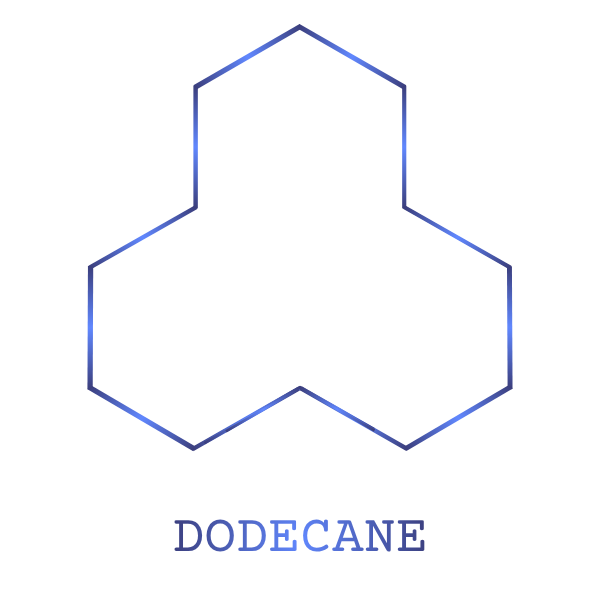

Kavern Siegl
Home
Portfolio
Projects
Contact
Driving Innovation in Small-scale Machinery
Freelance entrepreneur specializing in small-scale manufacturing, research, and industrial machinery
View Portfolio
